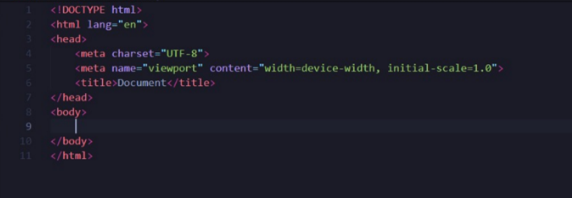

Veremos a seguir o que foi aprendido até aqui em html: vamos ver algumas tags e funcionalidades para criar uma primeira página no HTML 5. Veremos a seguir!
Para escrever-mos uma página em HTML5 vamos utilizar de uma IDE significa (Integrated Development Environment) ambiente de desenvolvimento integrado muito conhecida o Visual Studio Code da Microsoft, podemos instalá-lo a partir do site:
Clique aqui para baixarAo terminar de realizar o download e instalar, devemos procurar uma extensão que é Live Server ela serve para podermos visualizar a página através do navegador. Após instalar o VScode e encontrar a extensão do live server, ja estmaos prontos para começar a criar nossas páginas.
O inspetor de elementos é muito útil para verificarmos elementos de páginas de terceiros, assim como verificar como está o código no e como estão distribuidos os elementos dentro do navegador, é uma ferramenta muito util, mas como usá-la?
Ao entrar no determinado site que queremos inspecionar, apertaremos F12 no teclado ou clique nos 3 pontinhos no canto superior direito da tela do navegador e clique em "ferramentas do desenvolvedor" e ira aparecer um console com diversos tipos de recursos.
Ao abrir o inspetor, você verá algumas seções principais. A área de HTML mostra a estrutura da página, e nela é possível editar as tags diretamente. Já a seção de CSS exibe os estilos aplicados ao elemento selecionado, permitindo que você altere, adicione ou remova regras em tempo real. Além disso, há o console para executar comandos JavaScript, a aba de rede para monitorar as requisições feitas pela página e a de performance, que analisa o desempenho, como o tempo de carregamento.
Com o inspetor, você pode testar mudanças em tempo real, depurar scripts, verificar o comportamento visual dos elementos e até simular a visualização da página em dispositivos móveis. É possível, por exemplo, alterar estilos para ver como uma página ficaria com um novo design, inspecionar margens e espaçamentos, ou monitorar o carregamento de imagens e scripts.
Por fim, é importante lembrar que alterações feitas no inspetor não modificam permanentemente o site, apenas no navegador onde você está testando. Para aplicar mudanças permanentes, você deve replicá-las no código original no seu editor. O inspetor é uma excelente ferramenta de aprendizado, e explorá-lo sem medo ajuda muito no entendimento e desenvolvimento de páginas web.
A estrutura básica de um documento HTML segue uma hierarquia padrão que garante que navegadores interpretem corretamente o conteúdo da página. Aqui está um exemplo da estrutura básica:
 A estrutura básica de um documento HTML começa com a declaração do tipo de documento: <!DOCTYPE html>.
Em seguida, temos a tag <html>, que envolve todo o conteúdo. No cabeçalho, representado por
<head>, estão metadados como <meta charset="UTF-8">, garantindo a codificação correta,
e <meta name="viewport" content="width=device-width, initial-scale=1.0">, que ajusta a página para dispositivos móveis.
A tag <title> define o título da aba do navegador. Já no corpo, representado por <body>,
fica todo o conteúdo visível ao usuário.
Vamos falar de algumas Tags úteis e que server para formata um texto dentro do html também.
A tag <i></i> é a tag que formata texto em itálico.
<strong></strong> deixa o texto em negrito.
<u></u>, de underline, significa texto sublinhado.
<mark></mark> marca o texto como se fosse um marca-texto.
A tag <h1></h1> formata o texto entre as tags em um título principal. Conforme usamos <h2>, <h3>, <h4>, até <h6>, transformamos os textos em subtítulos. Quanto maior o número, menor o título.
A tag <blockquote></blockquote> é usada para marcar uma citação em HTML, destacando um trecho de texto de outra fonte.
Podemos criar textos pequenos com a tag <small></small>. Isso é útil para destacar informações menores, como notas ou detalhes adicionais.
A tag <hr> cria uma linha horizontal que separa seções ou conteúdos dentro da página.
Além disso, podemos usar <sup></sup> para elevar um texto (como em potências matemáticas) e <sub></sub> para abaixá-lo (como em fórmulas químicas).
Outras tags incluem:
<font></font>: Personaliza fontes, cores e tamanhos (embora esteja obsoleta e não seja mais recomendada).<del></del>: Indica texto deletado ou obsoleto, riscando-o.<abbr></abbr>: Define abreviações, mostrando o significado completo ao passar o cursor sobre o texto.Os atributos são usados para personalizar as tags HTML, adicionando informações ou configurando como os elementos devem se comportar. Por exemplo, o atributo id é utilizado para identificar um elemento único na página, como em <div id="minha-div"></div>.
Outro atributo comum é o class, que permite agrupar elementos para aplicar estilos ou comportamentos iguais. Por exemplo: <p class="texto-destaque">Este é um parágrafo</p> define um parágrafo com uma classe chamada "texto-destaque".
O atributo src é utilizado para indicar o caminho de arquivos externos, como imagens. Um exemplo seria: <img src="caminho-da-imagem.jpg" alt="Descrição da imagem">. Já o atributo href é usado para links, como em <a href="https://exemplo.com">Clique aqui</a>, que define a URL para a qual o link apontará.
Para acessibilidade, o atributo alt em imagens descreve seu conteúdo, ajudando leitores de tela. Por exemplo: <img src="foto.jpg" alt="Uma foto de um gato">.
Além disso, o atributo title adiciona uma dica ou descrição curta que aparece quando o usuário passa o cursor sobre o elemento. Exemplo: <button title="Clique aqui para enviar">Enviar</button>.
Para executar uma página HTML utilizando o Visual Studio Code (VSCode) e a extensão Live Server, o primeiro passo é instalar o VSCode em seu computador, caso ainda não o tenha feito. Basta acessar o site oficial do Visual Studio Code, baixar e instalar o software conforme o sistema operacional que você usa.
Após a instalação do VSCode, abra o programa e vá até a barra lateral esquerda, onde encontrará o ícone de Extensões. Nela, busque por Live Server e clique em Instalar quando encontrar a extensão correspondente.
Uma vez instalada a extensão, você pode começar a trabalhar em sua página HTML. Crie um novo arquivo no VSCode e escreva o código HTML que deseja visualizar. Por exemplo, crie uma estrutura básica de HTML com as tags principais, como <html>, <head>, <body>, e adicione um título e algum conteúdo no corpo da página. Após escrever o código, salve o arquivo com a extensão .html, por exemplo, index.html. Com o arquivo HTML salvo, você pode visualizar sua página diretamente no navegador.
Para isso, clique com o botão direito sobre o arquivo no VSCode e escolha a opção Open with Live Server. Isso abrirá o arquivo em uma nova aba no navegador. Você também pode clicar no botão Go Live, que fica no canto inferior direito da interface do VSCode, para iniciar o servidor local. Assim que o servidor for iniciado, o navegador será automaticamente atualizado para mostrar a página.
Uma das principais vantagens do Live Server é que ele permite que você veja as mudanças feitas no código em tempo real. Isso significa que, toda vez que você fizer uma alteração no arquivo HTML e salvar, o navegador será atualizado automaticamente, sem a necessidade de recarregar a página manualmente. Isso torna o processo de desenvolvimento muito mais rápido e dinâmico, já que você pode ver os efeitos das modificações imediatamente. Quando terminar de editar, você pode parar o servidor clicando novamente no botão Go Live ou simplesmente fechando a aba do navegador onde a página está aberta. Caso queira finalizar o servidor, basta clicar com o botão direito no arquivo e escolher a opção Stop Live Server. Com o Live Server, o processo de criação e teste de páginas HTML no VSCode fica mais ágil e eficiente, oferecendo uma experiência de desenvolvimento mais fluida.
Em HTML, os títulos são definidos utilizando as tags <h1></h1>, <h2></h2>, até <h6></h6>, onde <h1> representa o título principal, e à medida que o número aumenta, o título se torna progressivamente menor. Essas tags ajudam a estruturar o conteúdo, indicando a importância de cada seção ou subseção na página.
O <h1> é normalmente usado para o título principal da página ou seção, enquanto as outras tags são usadas para subtítulos, criando uma hierarquia visual e semântica no conteúdo. O uso dessas tags facilita a organização e torna o conteúdo mais acessível para leitores e motores de busca.
Além disso, ao utilizar essas tags, você melhora a acessibilidade e otimiza o SEO (otimização para motores de busca), pois os motores de busca reconhecem a estrutura hierárquica e relevância dos títulos. Isso ajuda a garantir que seu conteúdo seja encontrado e bem interpretado pelos mecanismos de pesquisa.
Quando combinados com outras tags de formatação, como o uso de <strong> para negrito ou <em> para itálico, você pode aprimorar ainda mais a apresentação do texto. As tags de título, juntamente com a formatação adequada, tornam seu conteúdo mais organizado e visualmente atraente.
Para criar uma lista ordenada, utilizamos a tag <ol></ol>, que significa "ordered list" (lista ordenada). No entanto, ela precisa de tags filhas <li></li> para definir cada item da lista. Por exemplo:
<ol>
<li>Item 1</li>
<li>Item 2</li>
</ol>
Se preferirmos uma lista não ordenada, basta trocar <ol> por <ul>, que significa "unordered list" (lista não ordenada).
Para criar links em HTML, utilizamos a tag <a></a>, que é conhecida como âncora. Por exemplo: <a href="http://dio.me">Dio.me</a>. Isso cria um link que direciona o usuário para o site da Dio.
Se quisermos abrir o link em uma nova guia do navegador, podemos usar o atributo target com o valor _blank. Por exemplo: <a href="http://dio.me" target="_blank">Dio.me</a>. Já o valor _self é o comportamento padrão e abre o link na mesma página.
Para criar navegação dentro da mesma página, utilizamos a tag <a> com ancoragem utilizando # seguido do valor de um id previamente definido. Por exemplo: <a href="#surgimento">Surgimento da Internet</a> e, no local de destino, colocamos <h2 id="surgimento">Surgimento da Internet</h2>.